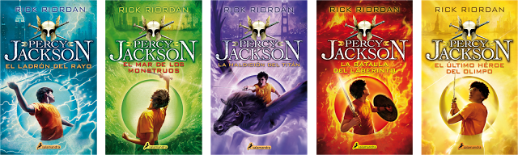
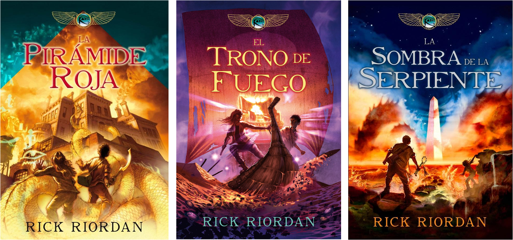
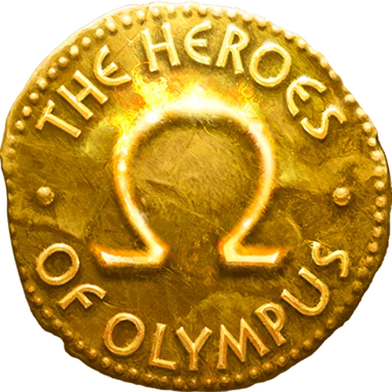
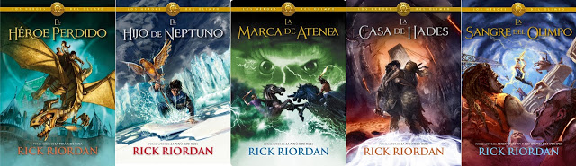
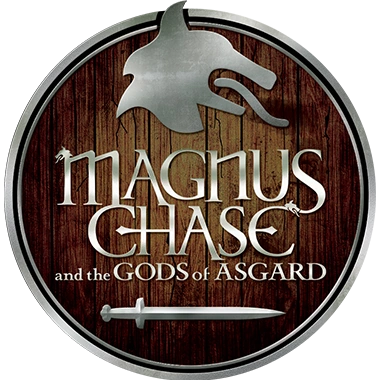
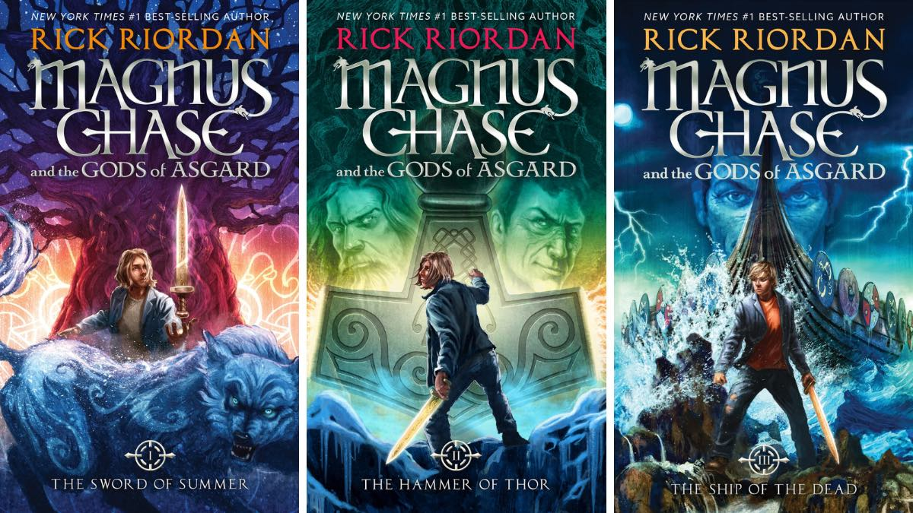

Libros y sagas
A continuacion listaremos los libros de categoria Infanto-Juvenil qu Rick Riordan ha escrito surante su carrera, comenzando con la primera y mas popular:
Percy Jackson y los Dioses del Olimpo 
Esta saga esta compuesta de cinco libros. En estos libros se narra la vida del protagonista, Percy Jacson, el cual descubre que es el hijo de uno de los antiguos dioses Griegos, Poseidon. El primero, El ladron del rayo, se publico por primera vez el 28 de junio de 2005. El publico lo recibio con entusiasmo, en los siguientes cuatro años se vendieron mas de 1,2 millones de copias, lo que resulto en una secuela y posteriormente una saga. El ultimo libro de la saga, El ultimo Heroe del Olimpo, se publico el 5 de mayo de 2009.
Las Cronicas de Kane 
Las Cronicas de Kane es una triologia que trata las aventura de los hermanos Kane. Esta serie, a diferencia de Percy Jackson, trata de los dioses Egipcios. El primer libro, La piramide roja, se publico el 4 de mayo de 2010 y el ultimo, La sombra de la serpiente, el 1 de mayo de 2012.
Los Heroes del Olimpo 
La saga de Los heroes del olimo es la continuacion de la saga de Percy Jackson con el agregado de los dioses en sus verciones Romanos. El primer libro, El Heroe Perdido, se publico el 12 de octubre de 2010 y el ultimo, La sangre del Olimpo, el 7 de octubre de 2014.
Magnus Chase y los Dioese de Asgard 
La triologia de Magnus Chase toma como referencia la mitologia Nordica. El primer libro, La Espada del Tiempo, se publico el 6 de octubre de 2015 y El Barco de los Muertos, el ultimo libro se publico 3 de octubre de 2017.
